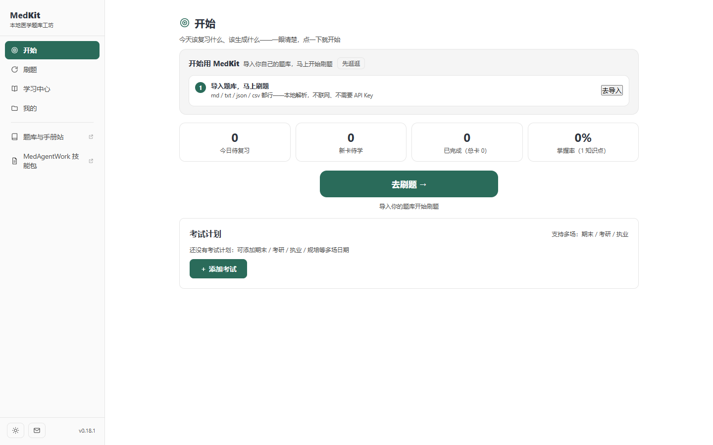
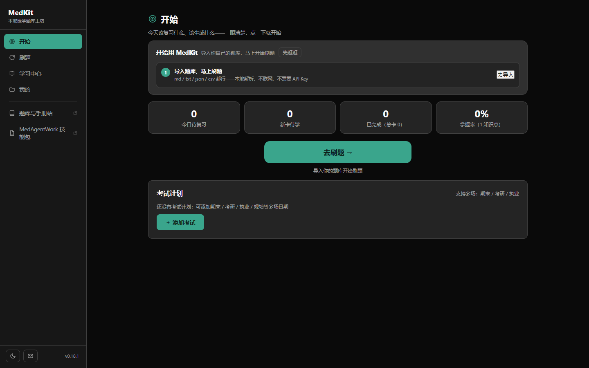
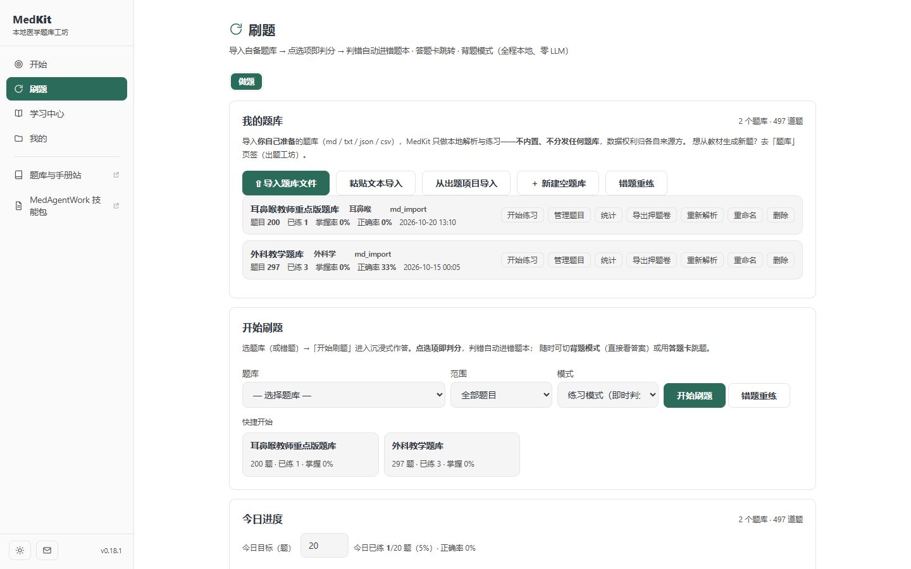
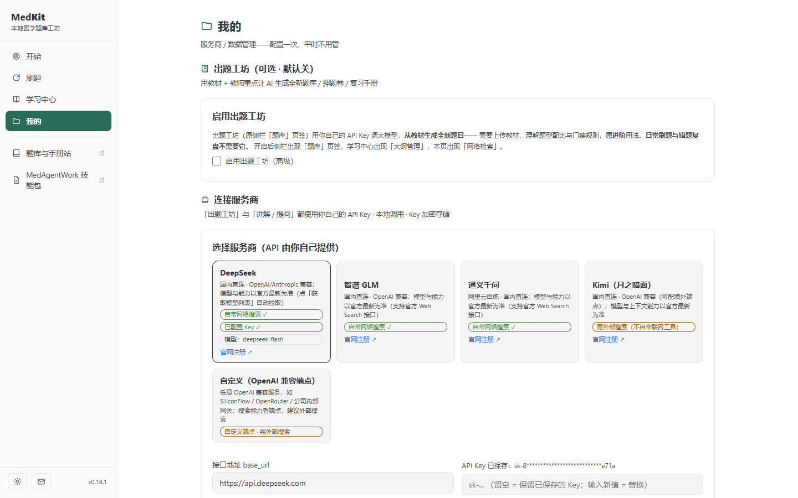
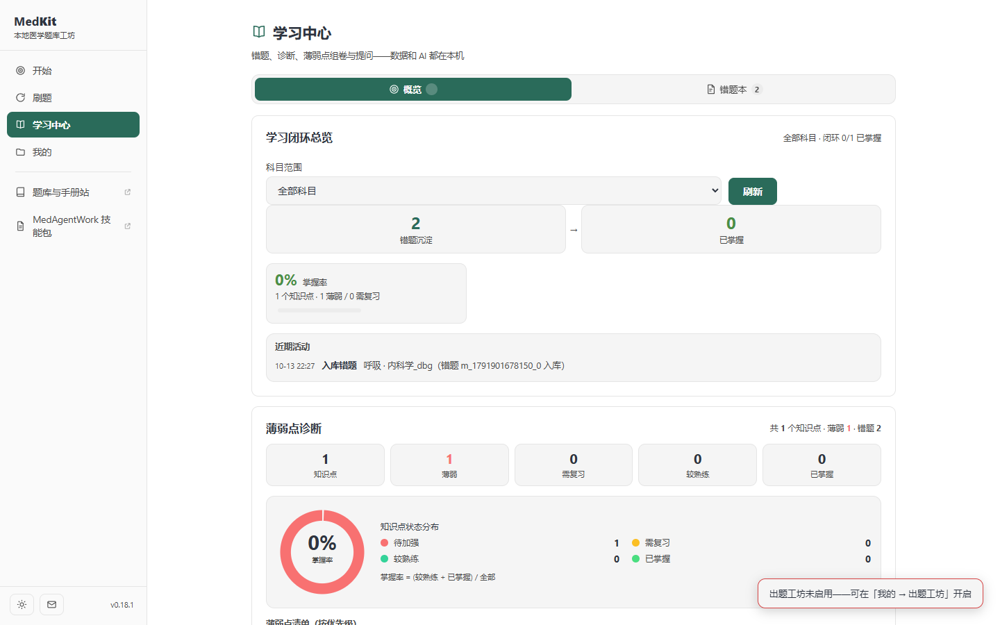
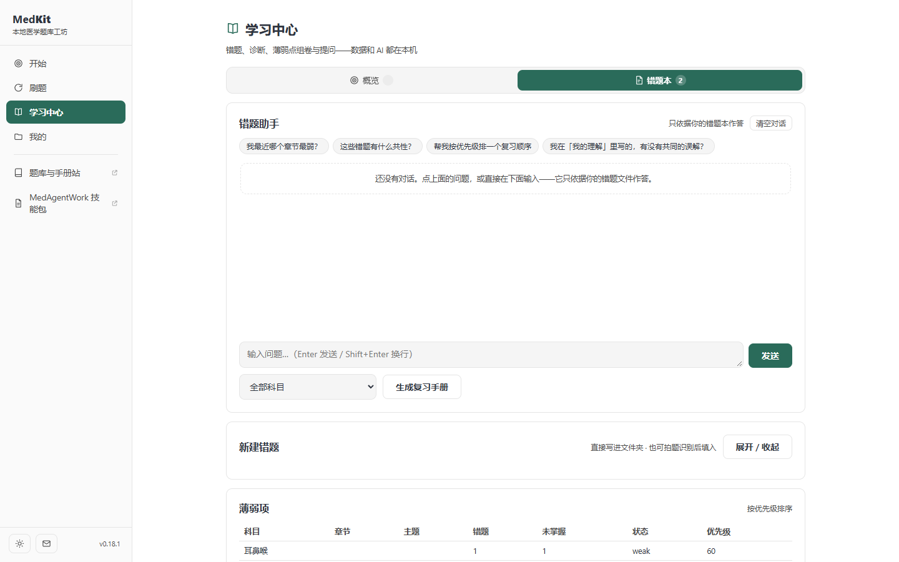

把 MedKit 从「功能面板的集合」
改造成一间安静的学习工作台
先诊断设计债，再给出目标设计语言与分阶段落地路径。本文不含任何代码改动—— 按你的要求，确认之后才开工。
结论先行
- 功能是好的，形态是错的。主闭环（导入题库 → 刷题 → 判错回流 → 错题复盘）扎实； 但界面把实际零使用的「出题工坊」放在了最显眼的位置，而把每天要用的「错题」藏在二级页签里。
- 亮色主题是残的。实测：亮色下卡片底色与页面底色都是
#ffffff，分离度 1.00:1，整个界面塌成一张白纸；控件边框对比度只有 1.26:1，远低于非文本对比要求的 3:1。 - 层级靠字号，而字号挤在一起。实测现状共有 16 档字号 （10 / 10.5 / 11 / 11.5 / 12 / 12.5 / 13 / 13.5 / 14 / 15 / 16 / 17 / 20 / 21 / 22 / 24）， 正文 14px——相邻档常只差 0.5px，撑不起层级，读起来是"糊"的。
- 一切都是卡片。「设置」一屏纵向 8 张卡，「错题本」6 张卡（含 1 张默认隐藏的详情卡）； 而布局只有一条 1000px 单栏——卡片替代了本该由间距和排版完成的组织工作， 空间也没有被用来承载"列表 + 详情""主区 + 上下文"这种本应并置的结构。
- 好消息：不需要推倒重来。暗色对比度已经过硬（正文 14.87:1）、图标体系统一、 零构建零 CDN 的架构天然适合"令牌化重写"。核心是三件事： S1 令牌与主题重写 · S2 排版与间距收敛 · S3 信息架构收敛。
| 指标 | 实测值 | 门槛 | 判读 |
|---|---|---|---|
| 亮色 · 卡片 vs 页面底 | 1.00:1 | 需可感知 | 等于零，卡片不可见 |
| 亮色 · 控件边框 vs 白底 | 1.26:1 | ≥3:1 | 输入框/选项行识别性不足 |
| 亮色 · 「成功」文字 vs 白底 | 3.96:1 | ≥4.5:1 | 小字不达标 |
| 亮色 · 卡片2 vs 卡片 | 1.09:1 | — | 填充式层级几乎不可见 |
| 暗色 · 正文 vs 卡片 | 14.87:1 | ≥4.5:1 | 优秀，保留 |
| 暗色 · 次要文字 vs 卡片 | 6.15:1 | ≥4.5:1 | 达标 |
| 暗色 · 边框 vs 卡片 | 1.50:1 | ≥3:1 | 同亮色问题 |
| 亮色 · 卡片 vs 页面底（提案） | 1.08:1 | 需可感知 | 靠"底灰卡白"关系成立 |
| 亮色 · 控件边框 vs 白底（提案） | 3.04:1 | ≥3:1 | 达标 |
1产品形态再确认
设计重构的前提是先把"这东西到底是什么"说准。以下结论全部来自仓库内可复核的记录，不是推测。
1.1 交付与技术形态
- 本机回环单用户 Web 应用：FastAPI + uvicorn 监听 127.0.0.1:4880~4889， 前端是纯静态资源（medkit/web），由浏览器承载；Windows 上以绿色版/安装包交付 （run_medkit.py 自动开浏览器）。
- 零构建 / 零 CDN / 经典脚本：13 个 JS 分片按固定顺序加载并共享全局作用域；CSP 全同源。 这是本方案的硬边界——任何引入打包器、CDN 字体、UI 框架的"现代化"都被排除。
- 规模纪律：每个 web/js 文件 ≤800 行；CSS 类必须有消费者；
index.html 的内联
on*调用的函数必须有顶层声明。 - 未来分叉：docs/网页版可行性分析_2026-10-16.md 已论证托管多用户版的可行性 （做题闭环 100% 可复现，阻断项是用户体系）。本方案的令牌与主题系统对桌面版与网页版同时成立， 不构成未来迁移的负担。
1.2 用户与真实场景
目标用户是临床医学本科生/规培，备考执业医师、期末或考研西综。典型使用场景是晚上 1~2 小时连续刷题 加错题复盘，偶发在手机浏览器上翻错题（桌面已过 768/390 响应式测试）。这意味着：
- 界面必须有"专注模式"——做题时不应该被导航和状态面板干扰；
- 错题复盘是粗读—筛选—精读—复述的来回动作，列表与详情的切换成本要接近零；
- 长时间阅读的眼部负担是关键指标——正文 14px、次要信息 11~12px 偏小。
1.3 真实使用路径（数据口径）
| 数据域 | 行数 | 状态 |
|---|---|---|
| bank_items / banks / bank_attempts | 460 / 2 / 22 | 在用（主链路） |
| vault_items（本地错题） | 17 | 在用 |
| mistakes（错题本） | 11 | 在用 |
| knowledge | 1 | 边缘 |
| projects（出题工坊产物） | 0 | 从未产出 |
| cards / review_cards / explains / tutor_sessions / syllabus_items / realexam_freq | 0 | 零使用 |
结论：MedKit 的真实形态是「刷题工具 + 错题复盘本」，出题工坊是可选插件。 这一点决定了后面信息架构收敛的方向——不是砍功能，而是把零使用的功能从视觉高位撤下来， 把高频功能从深层次提上去。
1.4 设计定位（一句话）
安静的学习工作台（Calm Study Workbench）。 它应该像一本排版考究的讲义，而不是一块状态大屏。三条原则贯穿全案：
- 层级先行，装饰殿后。先用字号、字重、间距把主次分清，再谈颜色和圆角。
- 一屏一个主任务。同一屏不做两件事，"该做什么"要在两秒内看得出。
- 颜色只承担语义。强调色稀缺才有力；语义色不可只靠色相区分。
2现状诊断
方法：把应用真跑起来（python run_medkit.py + Playwright 抓 8 张实机截图），逐屏走查并结合源码定位；颜色结论用 WCAG 相对亮度公式计算得出， 不依赖肉眼判断。代码位置均指向本仓库当前版本。
2.1 实机快照


#0a0a0a 接近纯黑，只有一层卡片亮度。



2.2 评分卡
Nielsen 十项启发式（0–4 分）
| # | 启发式 | 分 | 依据 |
|---|---|---|---|
| 1 | 系统状态可见性 | 3 | 做题层的进度/计时/流式光标做得很好；但列表加载只有转圈 +「加载中…」，无骨架屏。 |
| 2 | 系统与现实世界匹配 | 3 | 术语基本贴近医学生；但「课题/押题卷/切片/门禁 R1、D16」是内部词汇，直接暴露给用户。 |
| 3 | 用户控制与自由 | 3 | 有「停止生成」「恢复默认」「清空对话」；但删除题库/错题只有确认框，无撤销。 |
| 4 | 一致性与标准 | 2 | 按钮有 6 种（act / act.gray / inlineBtn / mini-btn / themeBtn / rst），圆角 6 档，字号 9 档。 |
| 5 | 错误预防 | 3 | 清空数据要求输入确认短语、导入有解析预览（成熟做法）。 |
| 6 | 识别优于回忆 | 2 | 出题参数分散在「题库」与「设置」两处；「题库 / 刷题 / 学习中心 / 错题」概念互相重叠。 |
| 7 | 灵活与效率 | 3 | 已有 Ctrl+1~5、Alt+1~2 快捷键；但无命令面板、无批量操作的菜单化。 |
| 8 | 美学与极简 | 2 | 同构卡片堆叠、成段解释文案、零使用功能占据显要位置。 |
| 9 | 错误恢复 | 2 | 错误多以提示条呈现，部分文案暴露内部实现；无撤销路径。 |
| 10 | 帮助与文档 | 2 | 说明文字散落在各卡片里，但缺少"这一屏我该做什么"的层级引导与统一帮助入口。 |
| 合计 | 25 / 40 | 需要改进（通常在野界面临界 20–32） | |
五维技术审计（0–4 分）
| 维度 | 分 | 主要发现 |
|---|---|---|
| 无障碍 | 3 | 对比度两处硬伤（亮色成功文字 3.96:1、控件边框 1.26:1）；其余良好——全局 :focus-visible 与 skip link 都在。 |
| 性能 | 3 | 零框架零 CDN 是优势；但进度条动的是 width（布局属性），且无骨架屏。 |
| 响应式 | 3 | 断点齐全（860/760/720/640/480/420）且三引擎测过；但内容列 max-width:1000px 在宽屏留下大片死区。 |
| 主题 | 2 | 令牌存在但亮色卡片=背景；透明色硬编码（--good33/--infobg/--errbg）；暗色近纯黑且只有一层亮度。 |
| 反模式 | 2 | 无 AI 味（没有渐变文字/玻璃拟态/紫蓝渐变），但属"品类中位数"——换皮给任何工具都不违和。 |
| 合计 13 / 20 | 可接受，但仍有实质工作 | |
反模式判定：没有 AI 味，但"没有味道"
这版界面通过了"看起来不像 AI 生成"的检测——它没有 2024–2025 年那套典型指纹 （渐变文字、发光强调、玻璃卡片、hero 指标堆砌）。但它因此撞上了另一个问题： 把它换皮给任何一个桌面工具都不违和。克制是对的，但没有用排版、留白和节奏立起自己的性格。 这是本方案里最需要"做加法"的一处。
问题清单（按严重度）
P0 亮色主题下卡片与页面同色
- 位置：medkit/web/css/base.css 亮色块
--bg1:#ffffff、--card:#ffffff（文件头两处:root[data-theme=light]内），消费点.card。 - 影响：亮色是多数人的默认（跟随系统），而这一主题下所有卡片、节标题区、数据区 全部融进同一张白纸。用户只能靠 1.26:1 的发丝线猜测"哪里是一块内容"——这就是截图里"白得发慌"的成因。
- 修法：把亮色关系反过来——页面底用浅灰（
#F4F7F6），卡片保持纯白（#FFFFFF）， 分离度 1.08:1 时卡片自然浮起，发丝线只做"内部分隔"而不再承担"识别卡片"的职责。
P1 亮色控件边框对比度不足，交互控件识别性差
- 位置：
--line:#e5e5e5被输入框 / 下拉框 /.bank-opt（选项行）/.dc-cell（答题卡格子）/.fbox（拖拽区）同时用作控件边界。 - 实测：
#e5e5e5对白底 1.26:1，对卡片2 1.16:1。 暗色侧#404040对卡片 1.50:1。均低于 WCAG 1.4.11（非文本对比 3:1）。 - 影响：选项行的边界、答题卡格子的边界、输入框的边界都属于"识别控件所必需的视觉信息"， 对比度不足会让视线扫不过去，也影响低视力与强光环境。
- 修法：拆成两级描边令牌——
--line-hair发丝（装饰性分组，允许 1.3:1）与--line-ctl控件描边（必须 ≥3:1）。 实测#858F8D对白底 3.04:1，暗色#77817E对#1a1f1d4.16:1，可用。
P1 亮色「成功」状态文字低于 AA
- 位置：
--good:#4a8f45（亮色）被.hint.good、.ready .ok、.substep.done > summary、.ocrst.done用作 12~13px 正文。 - 实测：3.96:1 < 4.5:1。暗色侧
#6ccb62对底色达到 11.86:1，对比之下亮色这一档明显欠调。 - 修法：亮色成功色压深到
#257944（提案实测 5.39:1）， 同时把"淡底 + 深字"的组合固定成一个语义色对（--good-fg / --good-bg），不再散落地用 rgba 调。
P1 字号档位过多，正文偏小，层级撑不起来
- 位置：
base.css+learn.css合计出现 16 档字号：10 / 10.5 / 11 / 11.5 / 12 / 12.5 / 13 / 13.5 / 14 / 15 / 16 / 17 / 20 / 21 / 22 / 24。 - 影响：12 / 12.5 / 13 / 13.5 / 14 这五档全挤在 2px 区间内，肉眼几乎无法当作不同层级； 而 10.5~12px 的说明文字在整屏铺开，长时间阅读明显吃力。层级实际上靠"有没有加粗"在硬撑。
- 修法：收敛到 5 档（12 / 13.5 / 15 / 19 / 28），正文从 14 → 15px。 相邻档之间保持 ≥1.3 倍以上的可辨间距。
P1 信息架构与真实使用错位
- 证据：出题工坊产物为 0，「启用出题工坊」却是设置页的首张卡； 「题库」是一级页签（默认隐藏），而每天要用的「错题」在学习中心里排第二。
- 影响：新用户第一眼看到的是自己不会用、也不需要用的东西； 而他真正每天要点的东西要多一次点击才能到达。零使用功能占据了最贵的版面。
- 修法：把出题工坊整组折叠进「设置 → 进阶功能」，位置落到末位； 「错题」提升为一级页签（详见 §5）。
P2 一切皆卡片，一屏塞多张，宽屏留死区
- 位置：
.card只有一种视觉权重；main{max-width:1000px;margin:0 auto}。 - 实测：1440×900 下主内容列宽 1000px，两侧各留约 113px，页面右侧实际空白 151px（截图像素实测）； 设置页纵向 8 张卡、错题页 6 张卡。也就是说：问题不是"屏幕没填满"， 而是卡片内部与卡片之间留了大片空白，却没有用这些空间承载更多结构。
- 影响：读者要靠滚动来拼凑信息，同一屏内没有重点；而"列表 + 详情""主区 + 上下文" 这类本应并置的关系被拆成了上下堆叠。
- 修法：宽屏 ≥1360px 时"今天/错题"改为两栏栅格（主区 + 320px 上下文栏）； 设置页由 8 卡改为 4 个分组；错题页保持聊天主位，但把"新建/薄弱项/今日复习"收进右栏或折叠区（详见 §5）。
P2 透明色硬编码，对比度不可预测
- 位置：
--good33、--good14、--infobg、--badbg、--errbg，以及散落的rgba(251,191,36,.12)等十余处内联 rgba。 - 影响：半透明叠加让文字对比度随底色漂移，同一语义在卡片、面板、浮层里表现不一致； 也让"这套颜色到底达标没"变成无法手算的事。
- 修法：为每个语义定义具名实色对（前景 / 淡底），需要半透明时只保留在焦点环与 交互态图层——那是唯一"看得见底下"是有意义的场景。
P2 单个决策点的选项超过 4 项
- 位置：题库行
.bank-item并列 6~7 个按钮 （开始练习 / 管理题目 / 统计 / 导出押题卷 / 重新解析 / 重命名 / 删除）； 服务商卡一张卡承载 5 类信息（名称 / 网络检索徽标 / 官网注册 / 已配置 Key / 模型名）。 - 修法：题库行收敛为「主操作 + ⋯ 菜单」；服务商卡先给"名称 + 一行能力 + 状态点"， 模型与注册链接移入展开态。
P2 死控件与空态空洞
- 位置：
index.html的#studynav分段控件当前只有「做题」一项， 构成一个"永远只有一个选项"的选择器；错题聊天空态被放在min-height:280px的框里， 首屏剩下半个屏的空白。 - 修法：单选项分段控件直接移除，等真有第二项再加； 空态改为"图标 + 一句为什么空 + 一个动作"，并让首屏在空态时也能露出「今日复习」。
P2 动效在用布局属性，且无时长/曲线令牌
- 位置：进度条
transition:width（.segbar i、.pvbar i、.ocrbar i）；全仓只用裸ease/linear，无统一时长变量。 - 影响：动画
width每帧触发重排，在这些条同时动（生成/OCR 页）时有实际开销； 时长与曲线各处不一，同一类反馈的快慢不一致。 - 修法：改用
transform:scaleX()；建立 3 档时长与 1 组曲线令牌。 值得注意的是prefers-reduced-motion已经全局关闭动画，这一点做对了、保留。
P3 圆角、层级与语义细节
- 圆角取值 6 / 7 / 8 / 9 / 10 / 11 / 14 共 7 种，无阶梯规律；建议收敛到 6 / 8 / 12 / 16 四档 + 全圆。
- z-index 出现 99 / 110 / 120 / 300 等绝对值，无命名阶梯；建议改为
sticky 100 → overlay 200 → modal 300 → toast 400 → tooltip 500。 - 页面级导航使用
role="tablist"（aside.side的.tabs、.learnnav、.css-pills）。页签语义适合"同一视图内切换面板"， 而这里切换的是整页——更贴近<nav>+ 链接。建议修正语义而非视觉。 - 聊天里的用户气泡使用
--infobg（信息蓝）配--accent（青绿）描边， 两个语义色混用，同一元素承担了两套含义。
值得保留的部分（不要改坏）
- 暗色的正文与次级文字对比度已达标甚至优秀（14.87:1 / 6.15:1）——新主题不能低于这个水平。
- SVG symbol 图标系统：统一 15px、stroke 1.8、round linecap，风格一致，直接沿用。
- 键盘可达性基础：全局
:focus-visible2px + offset 2，以及a.skip跳到主内容——这是很多产品没做的，继续维护。 - 沉浸式做题层：覆盖式作答 + 答题卡侧栏 + 计时 + 背题模式切换，范式正确，只需视觉打磨。
- 空态与说明文案的质量高于平均（如"只看未掌握（隐藏已归档…）"），有解释、有边界说明。
- 响应式断点体系齐全，含 390/420 的窄屏处理。
3对标研究
多轮检索的取舍标准：只取与本产品同构（本地工具、高信息密度、长时间使用）的案例， 以及能被具体动作翻译过来的原则。每条结论都标注了"适用于 MedKit 的那一半"，以及"明确不适用"的部分。
| 案例 | 它做对了什么 | 对 MedKit 的迁移动作 |
|---|---|---|
| Linear 2026 界面刷新 |
两条原则："不要让没挣得注意力的元素争抢注意力"（侧栏整体调暗、图标缩小、 去掉无意义的彩色图标底）与"结构应被感知而非被看见"（减少分隔线、圆角化边框、降低线对比度）。 | 侧栏从"和内容同等亮度"退到静默；.navsep、卡片框线、各处 .tag 描边
统一收敛；标题图标不再一律上色。 |
| Linear 主题系统 |
整套主题由 3 个变量（基色 / 强调色 / 对比度）生成，共 98 个具体色值； 使用感知均匀的 LCH 色彩空间，使不同色相在相同明度下看起来一样亮， 并因此能自动产出高对比度主题。 | MedKit 现在是"每个主题手写约 40 个色值"。改为 primitive → semantic 两层令牌， 明暗只重绑语义层；强调色一个 ramp 派生全部档位。 |
| Arc / Raycast 应用外壳 |
竖排侧栏承载"空间/上下文"而不是"功能清单"；命令栏（cmd-K）成为真正的导航脊柱。 | 保留侧栏（MedKit 的目的地少且稳定，适合保留），但把它从"交通系统"降级为"礼貌的提醒"； 命令面板作为可选加速器加入，且必须保留可见导航作为兜底。 |
| The Death of the Sidebar 2026-05 |
给出侧栏替代的五种模式，并诚实指出三种仍然该保留侧栏的场景： 文件树、有稳定深分类的参考内容、20+ 目的地的管理台。同时警告四类失败模式 （隐形导航焦虑、移动端失效、把侧栏改成七个悬浮按钮等）。 | MedKit 属于"参考内容 + 少数目的地"→ 保留侧栏，收窄并降噪， 而不是做无侧栏的炫技。失败模式里的"隐形导航焦虑"正是本方案拒绝"纯命令栏"的理由。 |
| 2026 暗色趋势 分层 surface |
明暗不是翻转：暗色用 3~4 级层次化表面（用 oklch 与 color-mix 计算）
表达高度，阴影退场；底色不是纯黑，而是 12~18% 明度。 |
暗色底从 #0a0a0a 抬到 #121614；建立 surface-0/1/2/3 四级；
放弃"靠 3 个灰色值硬撑"的现状。 |
| Bento 模块化栅格 2026 趋势 |
用不等跨度的模块化栅格组织混合内容，最重要的块获得最大空间； 用 CSS Grid 的跨度而不是固定断点实现。 | 只用在「今天」页：把 4 个等重 hero 数字 + 大按钮，改成一主两辅的模块化栅格。 明确不适用于做题区与错题列表——高密度列表需要的是稳定节奏，不是不等跨度。 |
| Anki / Quizlet 导入与刷题范式 |
导入对话框一律预览在上、目标与确认在下；导入必选牌组/科目； 闪卡手势的同时保留按钮等价路径（手势绝不能是唯一路径）。 | 对齐项目内既有质检结论：预览表前置、补科目输入、判分反馈同时给图标与颜色 （不只靠红绿，色盲用户同样可读）。 |
| shadcn/ui 令牌分层 |
语义令牌（--primary / --muted / --border）与原始令牌分离，
切主题只重绑语义层；主题切换不触碰组件逻辑。 |
直接对应 MedKit 的现状命名问题——--card/--card2/--card3、
--good33/--good14 是"按外观数量命名"而不是"按角色命名"，这是主题难维护的根因。 |
提炼：可迁移到 MedKit 的 8 条原则
- 支持性元素主动退场。导航、分隔、图标都该比内容暗一档。
- 结构靠间距和排版，而不是框线。框线是最后手段。
- 暗色不是亮色取反。暗色用表面层次表达高度；亮色用"底灰卡白"表达层次。
- 令牌按角色命名，按明暗重绑。一个角色一个名字，两套值。
- 强调色稀缺才有效。它属于"主要动作、当前选中、焦点"，不属于所有标题图标。
- 颜色不能是唯一的信息载体。状态必须配文字或图形。
- 高密度列表用稳定节奏，混合内容用模块化栅格。两种布局服务于两种信息结构，不可互换。
- 任何手势/快捷键都要有可见的等价路径。否则新用户会卡在"这里没有菜单"的焦虑里。
4目标设计语言
以下是可执行的设计处方。所有色值都经过对比度实测（数字附在每块之后）， 挑出来的取值已经满足目标门槛，不存在"看着还行但上不了线"的情况。
4.1 色彩：三层令牌 + 感知均匀授权
授权空间用 OKLCH（现代 Chromium 原生支持；本应用的承载环境是浏览器，
可放心使用，同时保留十六进制回退注释以便排查）。理由很实际：固定明度步进在人眼里才是等距的，
而现状的纯灰 #242424（chroma = 0）没有任何品牌倾向，
换成带极轻青绿底色的中性灰之后，整个界面会自然"贴"到主色上——这一步几乎不花钱，但消除"通用感"的效果最直接。
现状色板（暗色）
现状色板（亮色）
提案色板（暗色）
提案色板（亮色）
语义色（两主题各一对前景/淡底）
成功
亮 #257944
· 5.39:1
暗 #6fcf7f
· 8.79:1
警告
亮 #8a5a06
· 5.92:1
暗 #e0a52e
· 8.34:1
危险
亮 #b32d2d
· 6.31:1
暗 #ff8b8d
· 8.11:1
信息
与 accent 分离出一支中性蓝，
专门服务于"提示/说明/链接"，不再和主色混用。
现状的聊天用户气泡正是两者混用的例子。
| 层 | 命名 | 例子 | 规则 |
|---|---|---|---|
| ① 原始 | 色阶 | --teal-400 / --teal-600 / --teal-800 | 与明暗无关，永不改 |
| ② 语义 | 角色 | --surface-1 / --text-muted / --accent / --line-ctl | 明暗只重绑这一层 |
| ③ 组件 | 局部 | --btn-primary-bg / --opt-border | 只被一个组件消费，改动不外溢 |
4.2 字体与字阶：16 档收敛为 5 档
这一组的要点不是"倍率多大"，而是不再存在 0.5px 级的相邻档：5 档里最小的倍率是 1.12（12→13.5），
最大 1.47（19→28），相邻两档的绝对差都 ≥1.5px。字重收敛为 400 / 600 / 700 三档（现状 600 与 700 混用）。
字体栈沿用系统栈（不引入 Web 字体，这是零 CDN 约束下的正确选择，也省掉字体未到达时的重排）；
中文优先 Microsoft YaHei UI，等宽补上 Cascadia Mono。数字统一 tabular-nums（现状已用，保留）。
4.3 间距与栅格：4pt 基础
- 现状散落着 5 / 6 / 7 / 9 / 10 / 14 / 18 / 22 等取值 —— 全部并入上表；
- 同级元素之间用
gap不用margin，避免相邻塌陷与"末元素清理"规则； - 间距不平均才产生层级：区块之间 32，区块内元素之间 12，标题上方 24 下方 8。
容器宽度
- 单栏内容列
max-width由 1000 → 1080（表单/列表页）； - 宽屏 ≥1360px 的「今天」与「错题」改为主区 + 右侧上下文栏（栅格 1fr / 320px）， 让这些留白变成第二信息通道（现状实测右侧空白 151px、卡片内亦有大量空间未被使用）；
- 窄屏回落单栏，右侧栏内容降级为区块，不丢失任何信息。
4.4 圆角、阴影与层级
圆角 4 档
6 控件 · 8 卡内元素 · 12 卡片/面板 · 16 浮层
阴影 3 档（仅亮色）
暗色不投影，改用表面层次
z-index 阶梯
sticky 100 · overlay 200 · modal 300 ·
toast 400 · tooltip 500
4.5 动效：3 档时长 + 1 组曲线
| 令牌 | 时长 | 用于 | 曲线 |
|---|---|---|---|
--dur-1 | 120ms | 即时反馈：按下、开关、颜色切换 | --ease-out-quart: cubic-bezier(.25,1,.5,1)离场按时长的 3/4 计 |
--dur-2 | 220ms | 状态变化：悬停、展开、提示 | |
--dur-3 | 320ms | 布局变化：面板、抽屉、浮层 |
- 只动
transform与opacity；进度条从width改为transform:scaleX()，杜绝每帧重排； - 骨架屏取代转圈：错题列表、题库列表、今天页三处先出轮廓，再填内容——它在感知上比转圈快， 也让加载中的布局不跳；
- 内容可见性绝不依赖 JS 成功：入场动画用"终态即可见"的写法（动画结束停在
opacity:1），脚本挂了页面照样能读； - 保留现有的
prefers-reduced-motion全局关闭策略（这点现状做对了）。
4.6 组件状态：每个控件补齐八态
默认 / 悬停 / 焦点 / 按下 / 禁用 / 加载 / 错误 / 成功。现状最大的缺口是"只有悬停、没有按下"， 以及按钮家族过多导致同样一件事在不同页面长得不一样。下面是关键控件的目标样张——左列为提案，右列为现状对照。
提案
今天本周
描边 3:1；判分同时给图标与颜色； 选中态用描边加浅底而不是整块变色。
现状
做题
边框 1.26:1；判分只靠边框颜色（色盲不可辨）； 分区控件只有一个选项。
5界面与信息架构重构
视觉系统解决"好不好看"，信息架构解决"找不找得到"。这一节是后者，也是本方案里唯一会改动 index.html 与部分 JS 的部分，风险等级更高，单列一节供你决定范围。
5.1 应用外壳：保留侧栏，但让它退后一步
- 侧栏宽度 212 → 200px；背景与主区同层而不是更暗/更亮， 只保留一条发丝线分隔，激活项才用 accent 填充（现状完全是这个思路，只需把对比降下来）；
- 外链区（题库与手册站 / MedAgentWork 技能包）保留，但降到次级文字色，不再与主导航同样重；
- 可选加入
Ctrl+K命令面板：跳转（去刷题 / 看错题 / 今天）+ 动作（导入题库 / 新建错题 / 切换主题）。它是加速器，不是导航的替代品——可见导航必须保留， 否则会踩中"隐形导航焦虑"这个已知失败模式。
5.2 一级页签：5 → 4（题库随工坊开关出现）
| 现状 | 目标 | 为什么 |
|---|---|---|
| 开始 | 今天 | 改名贴近"我此刻要干什么"；收敛为一张今日卡 + 考试倒计时 + 最近项目。 |
| 刷题 | 刷题 | 保留。它是主链路的入口。 |
| 学习中心 （概览 / 错题本 / 大纲管理） | 错题 | 把每天要用的"错题"从二级提到一级；"概览"的指标并入「今天」，消除重复；大纲管理仍在工坊开启时出现在设置内。 |
| 我的 | 设置 | 改名。它是设置，不是个人主页；分组化后 8 张卡减到 4 组。 |
| 题库（工坊关闭时隐藏） | 不变（开启时出现） | 现状已如此，保留。 |
这个收敛方向与仓库内已有的精简分析结论一致（docs/重构设计方案_奥卡姆精简_第二轮_2026-10-15.md 的"一级页签 5 → 4、学习中心子视图 6 → 2"目标态），属于既定方向，不是本方案新发明的主张。
线框对照：今天页
5.3 错题页（最高频，重点改）
现状一屏纵向 6 张卡（含 1 张默认隐藏的详情卡），聊天框吃掉大半个首屏。但请注意——聊天作为主界面是你上一轮明确定下的方向， 本方案不动这个决策，只解决它的两个副作用：空态空洞、以及"聊天以外的东西都被挤到折叠线以下"。
- 宽屏两栏：左栏聊天（主位，保持最大），右栏固定 320px 放「今日复习」与「薄弱项」—— 这是原来被挤到屏外的两块内容，现在常驻可见；
- 聊天空态收缩：从
min-height:280px的固定框改为"内容自适应 + 上限"， 空态只占 3 行（图标 + 一句为什么空 + 3 个快捷提问），首屏立刻腾出空间； - 「新建错题」与「错题列表」：新建保持折叠；列表从"又一张卡"改为右栏下方的紧凑列表 （一行一条：题干首行 + 科目/章节标签 + 状态点），点击进入详情；
- 状态不能只靠颜色：
weak / shaky / solid / mastered四个芯片除了色相， 补上形状与文字（现状已带文字，需补图形差异以免色相不可辨）。
5.4 刷题页
- 题库行的 7 个并列按钮 → 「开始练习」+ ⋯ 菜单（管理题目 / 统计 / 导出押题卷 / 重新解析 / 重命名 / 删除），单点选项从 7 降到 2；
- 移除只有一个选项的
#studynav分段控件（等真有第二项再加）； - 「开始刷题」的三个下拉收敛为一行紧凑控件 + 一个主按钮，「错题重练」降为文字按钮；
- 「今日进度」并入开始卡片的底部一行进度条，不再单独占一张卡。
5.5 设置页
| 分组 | 内容 | 变更 |
|---|---|---|
| 外观 | 主题切换 | 新增分组；把主题从侧栏角落提升为明确设置项 |
| 连接 | 服务商 · Key 存档 · OCR · 网络检索 | OCR 与网络检索默认折叠（它们只在工坊链路里需要）；服务商卡瘦身 |
| 数据 | 存储统计 · 打开目录 · 备份 · 危险区 | 由 2 张卡合并为 1 组，危险区仍单独强调 |
| 进阶功能 | 出题工坊开关 · 提示词与规则 · 门禁规则速览 | 整组默认折叠，位置移到末位（现状是首卡） |
注意：这里只动位置与呈现，不删除出题工坊的任何能力—— 你此前对该功能的选择是"保持现状"，本方案严格遵守。
5.6 组件级改动清单
| 组件 | 现状 | 目标 |
|---|---|---|
| 按钮 | 6 个家族：act / act.gray / inlineBtn / mini-btn / themeBtn / rst | 3 档：主 / 次 / 静默，各含默认·悬停·按下·禁用·加载 |
| 输入框 | 边框 1.26:1，聚焦仅换边框色 | 边框 ≥3:1；聚焦加 2px 焦点环（外置 offset） |
选项行 .bank-opt | 选中/正确/错误只变边框色 | 选中加浅底+内描边；正确/错误加 ✓/✗ 图标 |
答题卡 .dc-cell | 四态靠底色区分 | 四态底色 + 当前格外描边 + 图例同屏（现状已有图例，保留并强化） |
卡片 .card | 单一权重，卡内嵌套卡 | 去嵌套，改用间距 + 发丝分隔；只有"独立可操作区块"才用卡片 |
| 加载 | 转圈 +「加载中…」 | 骨架屏（列表/统计/项目三类轮廓） |
| 进度条 | transition:width | transform:scaleX() + --dur-2 |
| 页签语义 | 页面级导航用 role="tablist" | 改回 nav + 链接语义；仅"同屏面板切换"保留 tablist |
6落地计划
原则：先做零 JS 风险的部分，再做需要动结构的部分。每个阶段都能独立验收、独立回滚。
S1令牌化与主题重写 风险：低 · 零 JS 改动
- 新增 medkit/web/css/tokens.css：原始色阶 + 语义令牌（约 200 行）；
- base.css 改为引用令牌；亮色主题重做（底灰卡白、两级描边、语义色达标）；暗色抬底并建 4 级表面；
- 不改任何 CSS 类名——保住现有
tests/test_css_no_orphans.py的类消费者守卫； - 新增单元守卫
tests/test_css_tokens.py：① 令牌消费者检查（无孤立令牌）； ② 对比度下限断言（用纯 Python 算 WCAG，不依赖浏览器）； - 验收：对比度脚本全绿 · 亮/暗双主题截图回归 ·
pytest与前端 lint 全绿。
S2排版 · 间距 · 圆角收敛 风险：低 · 零 JS 改动
- 字号收 5 档、字重收 3 档、间距归 4pt、圆角归 4 档、z-index 归语义阶梯；
- 逐视图调整
.card / .cardh / .hint与按钮族的排版关系； - 新增守卫：CSS 中不得出现 4pt 网格之外的间距值、不得出现字号白名单之外的
font-size； 动效属性白名单（禁止transition出现width/height/top/left）； - 验收：截图回归 + 新守卫 + 全量闸门。
S3信息架构收敛 风险：中 · 动 index.html 与少量 JS
- 一级页签 5 → 4（题库随工坊开关出现）；错题提升为一级；设置分组化；今天页重构；错题页两栏；
- 同步改动：index.html 结构、
showTab与各域视图映射、 tests/browser 的选择器断言、docs/AGENT_HANDOFF.md； - 约束检查：每个 JS 文件仍 ≤800 行；内联
on*调用的函数保持顶层声明； - 验收：浏览器用例（含窄屏 768/390）+ 键盘走查（Tab 序、skip link、焦点环）+ 截图回归 + 全量闸门。
S4动效与微交互 风险：低
- 时长/曲线令牌落地；进度条改 transform；三处骨架屏；空态统一为"图标 + 为什么空 + 一个动作"；
- 可选：
Ctrl+K命令面板（独立验收，包含可见导航兜底与首次使用提示）； - 验收：
prefers-reduced-motion复测 + 动效属性守卫 + 首屏加载截图对比。
S5收尾与守护 风险：低
- 双主题 × 宽/窄屏截图回归基线；无障碍复测（对比度、焦点、语义）；
- 同步 CHANGELOG.md、README.md 与设计文档；
- 重建本地发布产物，跑完发布守卫（这是仓库既有的必经环节）。
不做什么（边界）
- 不引入构建工具、UI 框架、CDN 或 Web 字体——零构建零 CDN 是硬约束，也是这个项目的优势；
- 不重命名既有 CSS 类（除非同一提交内同步守卫与消费者）；
- 不碰后端、不动数据模型、不改任何业务逻辑与文案含义；
- 不删除出题工坊的任何功能，只调整它的位置与呈现层级。
7风险与取舍
| 风险 | 说明 | 对策 |
|---|---|---|
| 亮色主题变化幅度大 | 底灰卡白是观感上的明显改变，可能"看起来不是同一个软件了"。 | 把新亮色与旧亮色各出一张同屏对照，纳入 S1 验收；不满意可只改 --surface-0 一档回退。 |
| 中英文字体混排基线差 | Segoe UI 与 Microsoft YaHei UI 的行内基线不同，行高可能需实测微调。 |
在 S2 用真实中文段落做行高扫描（1.5 / 1.6 / 1.65 三档选一），以截图比对定案。 |
| 改 IA 会牵动测试 | 浏览器用例按 data-tab / data-lv 选择器断言，页签收敛会连带失败。 |
S3 与测试改动同批提交；先跑一遍现有用例摸清受影响面，再动手。 |
| 命令面板的隐形门槛 | 键盘加速器对没用过的人等于不存在。 | 只在 S4 作为可选项；保留可见导航；首次使用给一次提示。 |
| 卡片改少 → 分组变弱 | 去卡片化后如果间距不足，内容会粘成一片。 | 用"间距 + 发丝分隔 + 字号"三件套替代卡片的分组职责，S2 结束时逐屏核对分组是否仍成立。 |
8待你拍板的决策点
下面 6 项我无法从代码或数据里推断，需要你定。确认之后我再开工，并按你的选择裁剪落地范围。
附证据索引
截图（本报告同目录下的 frontend-redesign-shots/）
01-start-light.png·02-practice-light.png·03-bank-light.png·04-learn-light.png·05-settings-light.png·06-mistakes-light.png—— 亮色（实为默认主题，跟随系统）07-start-dark.png·08-learn-dark.png—— 暗色
复现方式：python run_medkit.py 后， 用浏览器打开 http://127.0.0.1:4880，视口 1440×900 逐页签截图。 截图环境与真实 ~/.medkit 存在少量测试数据（2 个题库 497 题、11 条错题），不影响版式结论。
代码位置（当前版本实测）
| 结论 | 位置 |
|---|---|
| 亮色卡片与底同色 | medkit/web/css/base.css 亮色块 --bg1:--card:#ffffff |
| 发丝线承担控件边界 | 同上 --line:#e5e5e5；消费点 input/select/.bank-opt/.dc-cell/.fbox |
| 亮色成功色低于 AA | 同上 --good:#4a8f45 |
| 字号档位过多 | base.css + learn.css 共 11 档 font-size |
| 内容列宽度与死区 | main{max-width:1000px;margin:0 auto} |
| 进度条动的是布局属性 | .segbar i / .pvbar i / .ocrbar i 的 transition:width |
| 单选项分段控件 | medkit/web/index.html #studynav |
| 题库行 7 按钮 / 设置页 8 卡 | .bank-item 与 #tab-mine 内的 .card 序列 |
| 页面级导航用 tablist | aside.side .tabs · .learnnav · .css-pills |
| 全局焦点环与 skip link（做对了） | button:focus-visible…{outline:2px solid var(--accent)} 与 a.skip |
| reduced-motion 全局关闭（做对了） | @media (prefers-reduced-motion: reduce) 块 |
仓库内既有文档
- docs/重构设计方案_奥卡姆精简_第二轮_2026-10-15.md —— 真实库行数、页签收敛目标态
- docs/网页版可行性分析_2026-10-16.md —— 交付形态与技术约束
- docs/体验质检_医学生视角_2026-10-10.md —— 医学生视角的摩擦点与成熟产品对照
- docs/adr/ —— ADR-001…007（本次重构不触碰其中任何一条）
外部检索来源
- Linear《A calmer interface for a product in motion》(2026-03) —— 层级退让、结构隐于形
- Linear《How we redesigned the Linear UI (part Ⅱ)》—— LCH 主题生成、对比度变量
- 《The Death of the Sidebar in Modern SaaS App Design》(2026-05) —— 五种替代模式与三种该保留侧栏的场景
- 2026 UI 趋势综述（bento 网格 / 分层暗色表面 / 反 AI 味）—— 多来源交叉
- Anki 官方手册「文本文件」章 · Quizlet 导入流程 —— 导入预览顺序与必选分组的成熟做法
- shadcn/ui 与 Vercel Academy 核心概念 —— 语义令牌与原始令牌分层
度量方法说明
- 对比度全部使用 WCAG 相对亮度公式（sRGB 线性化 → 0.2126R+0.7152G+0.0722B → (L1+.05)/(L2+.05)）在本地计算， 不依赖任何在线检查工具的目测；
- 截图与页面结构结论来自对本机实跑的 Playwright 抓取，而非读代码推测；
- 配色与信息架构的建议属于设计判断，已在文中标注为"建议"而非"实测"。